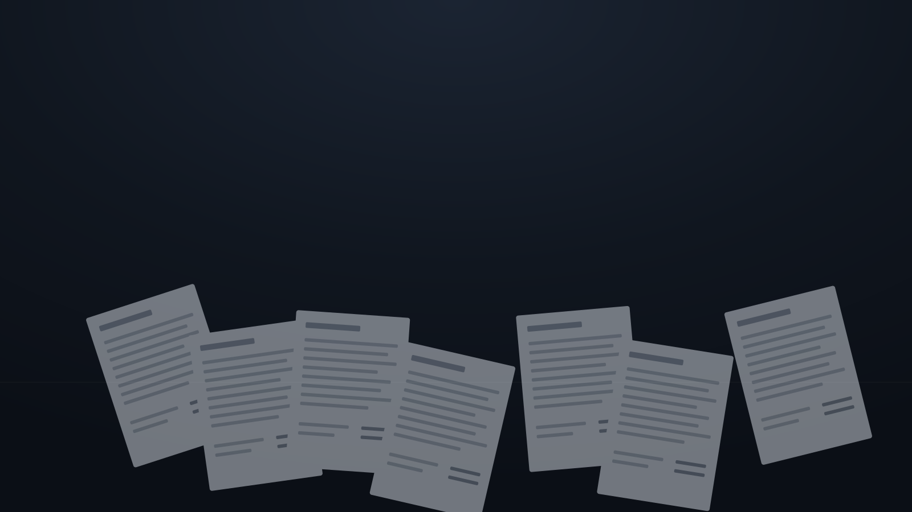
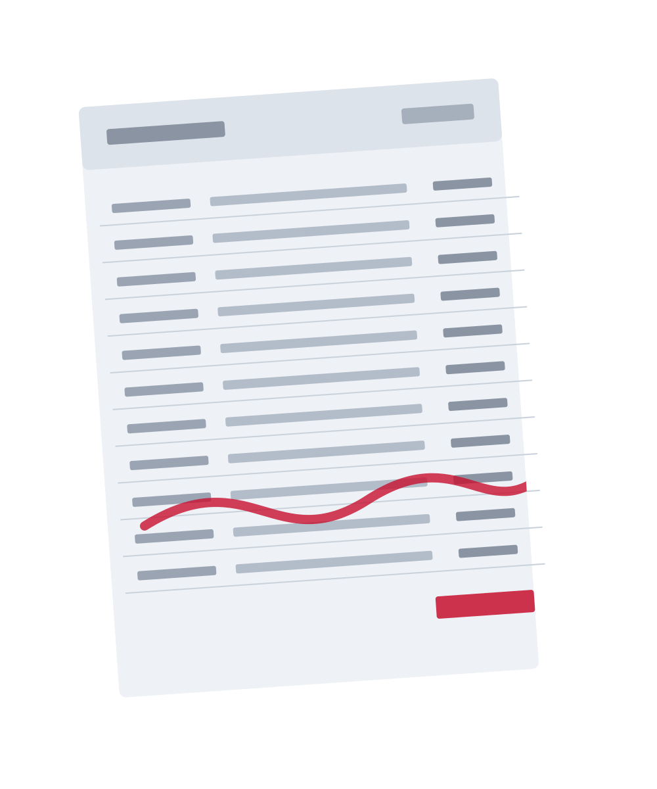

Every document job,
handled in seconds.
Merge, split, compress, redact, OCR, convert, compare, summarise — thirty-seven local-first tools for the PDFs you touch every day. And when the work is serious, a financial engine that proves its own numbers.
37
Document tools
5
Tool families
14
Bank profiles
4
Places it runs
One app for the whole paperwork day.
Most teams keep five browser tabs for five document chores. Prism is the honest replacement — the everyday toolbox and the heavy financial work, together.

For every file that fights back
Skewed photos, corrupted streams, locked tables, password walls. Repair it, rotate it, redact it, turn it into data — the toolbox absorbs all of it.
Browse the toolbox →
Thirty-seven tools, five families
Flagship
A financial engine that proves itself
Bank statements become reconciled, VAT-ready workbooks — with five deterministic checks that refuse to ship a number they can’t re-derive.
Meet the engine →
Runs where you actually work.
WEB
Browser suite
Standard tools run entirely client-side. Your files stay on your machine.
DESKTOP
Native app
Tauri build with local processing and a device-activation model.
ANDROID
Scan on the go
On-device document scanner, share-sheet and camera capture.
OFFLINE
Document Suite
A 29-tool offline engine with local OCR for no-network work.
Multi-model AI with automatic failover — or keep it entirely local. Private by default, POPIA-aligned.
Stop juggling tabs.
Thirty-seven tools free to start. Your documents stay on your machine until you say otherwise.